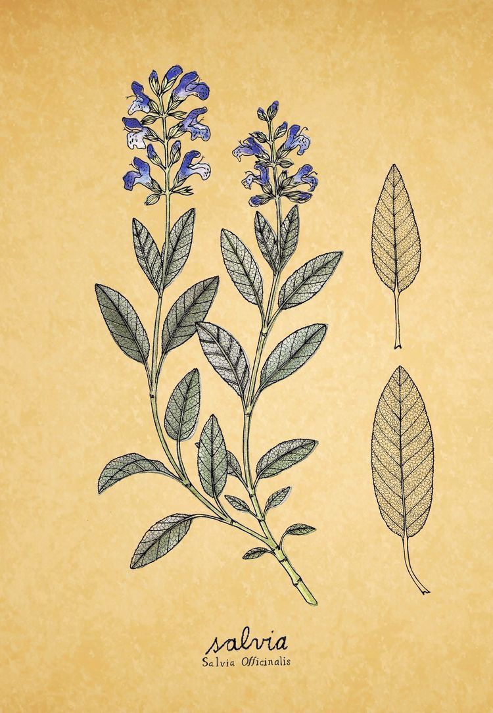

Las plantas medicinales han sido utilizadas desde épocas muy antiguas para el tratamiento de diversas enfermedades. Se detaca la antigua China por ser los primeros en documentar sus usos con estas plantas, seguidos de los Sumerios ubicados en el sur de la Mesopotamia Asiática, los cuales utilizaron el opio (derivado de la amapola) como analgésico al igual que el Aloe Vera.
Una civilización muy importante fue la de Babilonia, la cual dejó el código de Hammurabi que describía aproximadamente 700 formulas medicinales.
Los Egipcios y Griegos tampoco se quedaron atrás, ya que los primeros utilizaron plantas aromáticas como el regaliz o la menta para la preservación de los vendajes de las momias y luego Hipócrates describió mas de 250 vegetales.
En Roma, Dioscórides armó un inventario con más de 600 plantas curativas mientras que en la India se describieron mas de 700 ejemplares. En esta época también se destaca el trabajo de los monjes durante la Edad Media debido a que cultivaban con fines terapéuticos y realizaron los primeros herbarios con dibujos exactos hechos a mano.
No obstante, hay que aclamar a los pueblos originarios en las Américas ya que utilizaban muchas hierbas medicinales con varios fines, las cuales se siguen usando hoy en día.
Toda esta historia concluye en el difusión del conocimiento de las propiedades curativas en Europa, en donde se crearon jardines aromáticos y medicinales.
